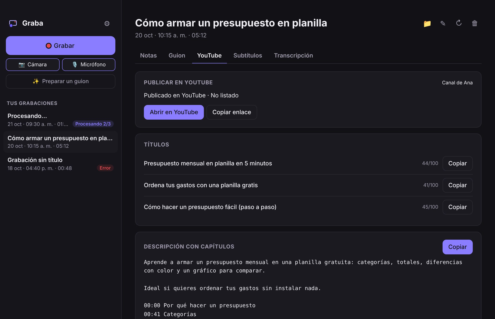

Graba tu pantalla. Tu IA te deja el guion.Record your screen. Your AI writes the script.
Pantalla, cámara y voz, como Loom. Tu IA te escribe qué decir y lo lees en un teleprompter que no sale en el video. Al terminar, Graba transcribe en tu computador y te deja notas, títulos, descripción con capítulos y subtítulos.Screen, camera and voice, like Loom. Your AI writes what to say and you read it on a teleprompter that doesn't show in the video. When you finish, Graba transcribes on your computer and gives you notes, titles, a description with chapters and subtitles.
¿Otro sistema?Another system? Todas las formas de instalarAll the ways to install · Necesitas Claude, ChatGPT o Gemini:You need Claude, ChatGPT or Gemini: te explicamos cómohere's how
De la idea al video publicado, sin escribir una líneaFrom idea to published video, without writing a line
Cuatro pasos. Tú solo pones la idea y la voz.Four steps. You just bring the idea and your voice.
El video nunca sale de tu computador. Solo el texto viaja a tu IA, con tu cuenta, y todo vuelve a una carpeta tuya.The video never leaves your computer. Only the text goes to your AI, with your account, and everything comes back to your own folder.
Por qué Graba y no otro grabadorWhy Graba and not another recorder
Casi todos los grabadores con IA suben tu video a su nube y te cobran una suscripción. Graba funciona al revés.Most AI screen recorders upload your video to their cloud and charge a subscription. Graba works the other way around.
Somos honestos: si lo tuyo es mandar un link para que tu equipo comente al tiro, Loom lo hace mejor. Si quieres videos bien hechos, tuyos y gratis, Graba.To be honest: if you need to send a link for your team to comment on right away, Loom does that better. If you want polished videos that are yours and free, Graba.
Lees tu guion. Tu audiencia no lo ve.You read your script. Your audience doesn't see it.
El teleprompter, la barra de grabación y la cuenta regresiva se quedan fuera del video. Tu cara en la burbuja sí sale. Hablas mirando a la cámara, sin papeles ni pausas para recordar.The teleprompter, the recording bar and the countdown stay out of the video. Your face in the bubble does show. You speak looking at the camera, no notes, no pauses to remember.
A tu ritmo: play, más rápido o más lento, y vuelves al inicio con un clic.At your pace: play, faster or slower, and back to the start in one click.
Cambias el tamaño y lo pones cerca de la cámara para que tu mirada no se note.Change the size and place it near the camera so your eyes don't give it away.
Eliges qué grabar y aprietas el botón rojo. Cuenta regresiva grande y a grabar.Pick what to record and press the red button. A big countdown and you're rolling.
Grábalo a tu maneraRecord it your way
Una sola barra abajo, simple. Todo lo que eliges queda guardado para la próxima vez.One simple bar at the bottom. Everything you choose is remembered for next time.
Qué grabarWhat to record
Toda la pantalla, solo una app, el área que marques con el mouse o solo la cámara.The whole screen, just one app, the area you draw with the mouse, or just the camera.
Tu cámara, con la forma que quierasYour camera, any shape
Círculo, cuadrada, horizontal o vertical, y del tamaño que te acomode. O sin cámara.Circle, square, landscape or portrait, at whatever size suits you. Or no camera.
Tu micrófono y tu cámaraYour mic and camera
Eliges cuál usar desde su propio menú, sin entrar a ajustes. Si quieres, también el sonido del Mac (o del computador en Windows).Pick which one to use from its own menu, no settings needed. If you want, the Mac's sound too (or the computer's on Windows).
- Pausa sin huecosPause without gapsPausas, respiras y sigues: el video queda de corrido.Pause, breathe and go on: the video stays seamless.
- Atajos en cualquier appShortcuts from any app⌃⌥⌘R empieza o termina y ⌃⌥⌘P pausa (Ctrl+Alt+Shift+R / P en Windows y Linux).⌃⌥⌘R starts or stops and ⌃⌥⌘P pauses (Ctrl+Alt+Shift+R / P on Windows and Linux).
- Recorta el inicio y el finalTrim the start and endSin el «eh… ya, ¿se escucha?». La transcripción, los subtítulos y los capítulos se corren solos y el original queda guardado.No more “uh… ok, can you hear me?”. Transcript, subtitles and chapters shift on their own and the original is kept.
Llega y grabaJust show up and record
Cuéntale a tu IA la idea, cuánto debe durar y súmale tu presentación. Te escribe lo que vas a decir con el largo justo, y el teleprompter queda listo.Tell your AI the idea, how long it should be and add your slides. It writes what you'll say at just the right length, and the teleprompter is ready.
- Desde lo que ya tienesFrom what you already haveUna idea, un PDF, un PowerPoint, un Word o tus notas. Tu IA los lee con tu cuenta.An idea, a PDF, a PowerPoint, a Word file or your notes. Your AI reads them with your account.
- Con el largo justoAt just the right lengthLe dices cuántos minutos y escribe para eso: unas 140 palabras por minuto, leyendo cómodo.Tell it how many minutes and it writes for that: about 140 words per minute, read comfortably.
- Con indicacionesWith cuesMarca cuándo cambiar de diapositiva o qué mostrar, entre corchetes, sin contarlas como texto leído.It marks when to change slides or what to show, in brackets, not counted as read text.
Terminas de grabar y ya está todo escritoYou stop recording and it's all written
De cada grabación, con un botón para copiar cada cosa y pegarla en YouTube, LinkedIn o donde quieras.From every recording, with a copy button for each part to paste into YouTube, LinkedIn or anywhere.

¿Se equivocó? Díselo con tus palabrasGot something wrong? Say it in your own words
La transcripción a veces escucha mal un nombre. Le escribes qué está mal y tu IA lo arregla en todo: notas, títulos, transcripción y subtítulos. Y lo aprende para las próximas grabaciones.Transcription sometimes mishears a name. Write what's wrong and your AI fixes it everywhere: notes, titles, transcript and subtitles. And it learns it for future recordings.
Usa la IA que ya tienes, no una másUse the AI you already have, not another one
Graba no trae su propia IA ni tiene servidores: le pide a la tuya que escriba, con tu propia cuenta. Elige la que ya usas.Graba doesn't ship its own AI or have servers: it asks yours to write, with your own account. Pick the one you already use.
Claudecon Claude Codewith Claude Code
Necesitas Claude Pro o Max (o una cuenta de empresa). Lee muy bien presentaciones y PDF.You need Claude Pro or Max (or a work account). Great at reading slides and PDFs.
Cómo instalarlaHow to install itChatGPTcon Codexwith Codex
Funciona con cualquier cuenta de ChatGPT, incluso la gratis (con límites de uso).Works with any ChatGPT account, even the free one (with usage limits).
Cómo instalarlaHow to install itGemini betacon Antigravity CLIwith Antigravity CLI
Con tu cuenta de Google. Es nueva, así que aún la estamos puliendo.With your Google account. It's new, so we're still polishing it.
Cómo instalarlaHow to install itYa pagas (o usas gratis) una IA. Graba no suma otro cobro.You already pay for (or use for free) an AI. Graba adds no other charge.
El texto va directo de tu computador a tu proveedor. Graba no ve nada en el camino.The text goes straight from your computer to your provider. Graba sees nothing on the way.
Tus textos los escribe el modelo que usas a diario, no uno barato elegido para ahorrar.Your texts are written by the model you use every day, not a cheap one picked to save money.
Sin contraseñas que entregar. Si cambias de IA, tus videos siguen siendo tuyos.No passwords to hand over. If you switch AIs, your videos are still yours.
Qué le pide Graba a tu IAWhat Graba asks your AI for
Los subtítulos no los escribe la IA: salen directo de la transcripción, con sus tiempos exactos. Las instrucciones que le damos a tu IA están en el código, a la vista de todos.Subtitles aren't written by the AI: they come straight from the transcript, with exact timings. The instructions we give your AI are in the code, in plain sight.
¿Claude Code, Codex, terminal…? Tranquilo.Claude Code, Codex, terminal…? Don't worry.Preparamos una guía sin tecnicismos: qué es cada una, cuál te conviene y cómo dejarla lista en cinco minutos. Graba la detecta y la prueba sola la primera vez.We made a plain-language guide: what each one is, which suits you and how to get it ready in five minutes. Graba detects and tests it on its own the first time.
Abrir la guíaOpen the guideTus videos son tuyosYour videos are yours
Graba no tiene servidores, ni cuentas, ni base de datos: no hay dónde guardar tus cosas aunque quisiéramos.Graba has no servers, no accounts and no database: there's nowhere to keep your stuff even if we wanted to.
Todo en tu computadorAll on your computer
Grabar y transcribir pasa en tu equipo. El video no se sube a ningún lado.Recording and transcribing happen on your machine. The video isn't uploaded anywhere.
Sin rastreoNo tracking
Sin telemetría, analítica ni publicidad. Graba no sabe quién eres ni qué grabas.No telemetry, analytics or ads. Graba doesn't know who you are or what you record.
Archivos abiertosOpen files
MP4, Markdown y SRT en una carpeta normal. Ábrelos con lo que quieras o arma tus propios scripts.MP4, Markdown and SRT in a normal folder. Open them with anything or build your own scripts.
Tu YouTube, tu llaveYour YouTube, your key
Si conectas tu canal, el permiso queda guardado en el llavero de tu computador. Lo quitas con un clic.If you connect your channel, the permission is kept in your computer's keychain. Remove it in one click.
No nos creas: revisa el códigoDon't take our word for it: read the code
Todo el código es público (licencia MIT) y cada versión se arma en GitHub a la vista de todos. Cualquiera puede leer qué hace Graba, auditarlo o mejorarlo.All the code is public (MIT license) and every version is built on GitHub in plain sight. Anyone can read what Graba does, audit it or improve it.
Una carpeta por videoOne folder per video
- Sin límites de largo ni cantidad: el único límite es tu disco.No length or count limits: the only limit is your disk.
- Formato documentado:
grabacion.mdtiene secciones fijas para automatizar encima.Documented format:grabacion.mdhas fixed sections to automate on top of. - Respaldos solos: antes de cada corrección se guarda una copia.Automatic backups: a copy is saved before every correction.
~/Graba/
2026-10-20 1015 - Presupuesto 2027/
video.mp4
grabacion.md # notas, guion, títulos, capítulos…
subtitulos.srt
transcripcion.json
Open source y sin fines de lucroOpen source and non-profit
Graba no es una empresa. No hay versión de pago, ni anuncios, ni inversionistas, ni datos que vender. Nadie gana plata con ella: la hacemos entre todos y es de todos.Graba isn't a company. There's no paid version, no ads, no investors, no data to sell. Nobody makes money from it: we build it together and it belongs to everyone.
InstalarInstall
Un comando o un archivo. Sin Python, sin Homebrew, sin nada más que instalar.One command or one file. No Python, no Homebrew, nothing else to install.
🍎 Mac
Chip Apple y macOS 15 o posterior. En la Terminal:Apple chip and macOS 15 or later. In Terminal:
curl -fsSL https://raw.githubusercontent.com/graba-app/graba/main/instalar.sh | bashO descarga la app, arrástrala a Aplicaciones y la primera vez ve a Ajustes del Sistema → Privacidad y seguridad → «Abrir igualmente».Or download the app, drag it to Applications and the first time go to System Settings → Privacy & Security → “Open Anyway”.
Descargar para MacDownload for Mac🪟 Windows
Windows 10 u 11. En PowerShell:Windows 10 or 11. In PowerShell:
irm https://raw.githubusercontent.com/graba-app/graba/main/instalar.ps1 | iexO con el instalador. Si aparece «Windows protegió tu PC»: «Más información» → «Ejecutar de todas formas».Or with the installer. If “Windows protected your PC” shows up: “More info” → “Run anyway”.
Descargar para WindowsDownload for Windows🐧 Linux
x86_64 con PulseAudio o PipeWire. En una terminal:x86_64 with PulseAudio or PipeWire. In a terminal:
curl -fsSL https://raw.githubusercontent.com/graba-app/graba/main/instalar.sh | bashO el AppImage: dale permiso de ejecución y ábrelo (necesita FUSE).Or the AppImage: make it executable and open it (needs FUSE).
Descargar AppImageDownload AppImageDespués se actualiza sola: te avisa dentro de la app y tus grabaciones no se tocan. ¿No tienes una IA instalada? Guía sin tecnicismos.After that it updates itself: it lets you know inside the app and your recordings aren't touched. No AI installed yet? Plain-language guide.
PreguntasQuestions
¿Es una alternativa gratis a Loom?Is it a free alternative to Loom?
Para grabar tu pantalla con tu cámara y tener el texto listo, sí. Si necesitas compartir un link al instante para que otros vean y comenten, Loom sigue siendo mejor para eso: Graba deja el video en tu computador y tú decides dónde publicarlo.For recording your screen with your camera and getting the text ready, yes. If you need to share a link instantly for others to watch and comment, Loom is still better at that: Graba keeps the video on your computer and you decide where to publish it.
¿Sube mi video a algún lado?Does it upload my video anywhere?
No. El video y la transcripción quedan en tu computador. A tu IA solo le llega el texto de la transcripción (y los archivos que tú adjuntes para el guion), con tu cuenta, igual que si lo pegaras en su chat. Solo si conectas tu canal de YouTube y lo pides, el video se sube a tu canal.No. The video and transcript stay on your computer. Your AI only gets the transcript text (and any files you attach for the script), with your account, just as if you pasted it into its chat. Only if you connect your YouTube channel and ask for it does the video go to your channel.
¿El teleprompter sale en el video?Does the teleprompter show in the video?
No. En Mac y Windows el teleprompter, la barra de controles y la cuenta regresiva quedan fuera de la grabación; la burbuja de tu cámara sí sale. En Linux todavía no hay forma de esconderlos de la captura: ahí conviene grabar una sola ventana.No. On Mac and Windows the teleprompter, the control bar and the countdown stay out of the recording; your camera bubble does show. On Linux there's no way yet to hide them from the capture: there, record a single window.
¿Qué IA necesito?Which AI do I need?
La que ya tengas: Claude Code (Claude Pro o Max), Codex (cualquier plan de ChatGPT, incluso el gratis con límites) o Antigravity CLI (Gemini). Se instala una vez; aquí está la guía. Sin IA, Graba igual graba y te deja la transcripción y los subtítulos.The one you already have: Claude Code (Claude Pro or Max), Codex (any ChatGPT plan, even free with limits) or Antigravity CLI (Gemini). You install it once; here's the guide. Without an AI, Graba still records and gives you the transcript and subtitles.
¿Por qué mi computador dice que no puede verificar la app?Why does my computer say it can't verify the app?
Porque Graba todavía no paga los certificados de Apple y Microsoft que quitan ese aviso: es un proyecto gratis. El código es abierto, cada versión se compila en GitHub a la vista de todos y el instalador de un comando revisa la huella (SHA-256). En Mac: Ajustes del Sistema → Privacidad y seguridad → «Abrir igualmente». En Windows: «Más información» → «Ejecutar de todas formas».Because Graba doesn't pay yet for the Apple and Microsoft certificates that remove that warning: it's a free project. The code is open, every version is built on GitHub in public and the one-command installer checks the fingerprint (SHA-256). On Mac: System Settings → Privacy & Security → “Open Anyway”. On Windows: “More info” → “Run anyway”.
¿Funciona en Windows y Linux?Does it work on Windows and Linux?
Sí: es la misma app con la misma interfaz. En Windows y Linux la transcripción usa el procesador (en Mac, el chip gráfico), así que puede ser algo más lenta; el modelo «Liviano» va bien en casi cualquier computador.Yes: same app, same interface. On Windows and Linux transcription runs on the CPU (on Mac, the GPU), so it can be a bit slower; the “Light” model runs well on almost any computer.
¿Por qué es gratis? ¿Quién la mantiene?Why is it free? Who maintains it?
Porque Graba es un proyecto open source sin fines de lucro: no vende nada ni a nadie. La mantiene una comunidad de personas que la usan; cualquiera puede sumar ideas, pruebas, traducciones o código. Todo lo que entra se revisa antes. La licencia es MIT.Because Graba is a non-profit open-source project: it doesn't sell anything to anyone. It's maintained by a community of people who use it; anyone can add ideas, testing, translations or code. Everything is reviewed before it goes in. The license is MIT.
¿Cómo se actualiza?How does it update?
Sola: Graba revisa si hay una versión nueva al abrirse y cada 6 horas, y te avisa dentro de la app. Tocas Actualizar y listo; nunca en medio de una grabación, y tus videos no se tocan.By itself: Graba checks for a new version when it opens and every 6 hours, and lets you know inside the app. Click Update and you're done; never in the middle of a recording, and your videos aren't touched.
¿En qué idiomas funciona?Which languages does it support?
La app está en español e inglés. La transcripción reconoce muchos idiomas y la IA escribe en el mismo idioma en que hablas.The app is in Spanish and English. Transcription recognizes many languages and the AI writes in the same language you speak.
Hagámosla entre todosLet's build it together
Graba es gratis y abierta. Hay lugar para cualquiera, programes o no.Graba is free and open. There's room for everyone, coder or not.